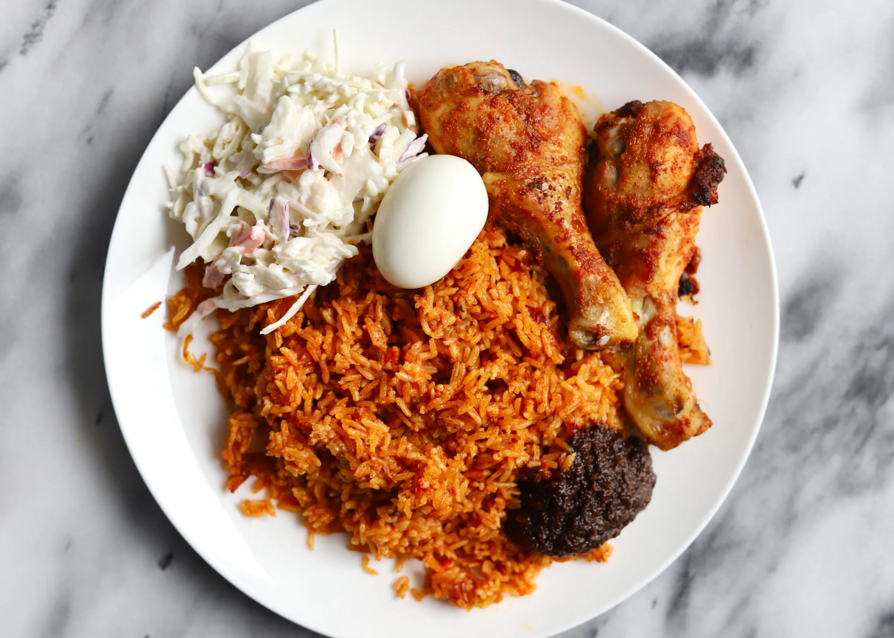

Jollof Rice

Description
Jollof rice is a quintessential West African dish celebrated for its vibrant red-orange hue and rich, spicy
flavor profile. It's a one-pot meal that features rice simmered in a robust sauce of tomatoes, onions, bell
peppers, and a blend of local spices, often including thyme and curry powder. This festive dish is commonly
adorned with hard-boiled eggs and served with a side of creamy coleslaw, offering a blend of textures and
refreshing crunch. Jollof rice is a staple at gatherings and a symbol of regional cuisine, with each country
claiming its unique twist on the recipe. Its hearty, comforting nature makes it a beloved comfort food across
West Africa and beyond.
Ingredients
- Rice (long-grain parboiled)
- Tomato paste and fresh tomatoes
- Red bell peppers
- Onions
- Vegetable oil
- Chicken or beef stock
- Spices (thyme, curry powder, bay leaves)
- Scotch bonnet peppers (optional for heat)
- Eggs (hard-boiled)
- Coleslaw (cabbage, carrots, mayonnaise)
Steps
- Rinse the rice in cold water and set aside.
- Blend the fresh tomatoes, red bell peppers, onions, and scotch bonnet peppers to a smooth mix.
- Heat vegetable oil in a pot, sauté sliced onions, then add tomato paste, cooking until the oil begins to
separate.
- Pour in the blended tomato mixture, add thyme, curry powder, and bay leaves, and fry until the sauce
thickens and the raw taste cooks out.
- Stir in the chicken or beef stock, bring to a boil, and season with salt to taste.
- Add the washed rice to the pot, cover with stock, and cook on medium heat until the rice is done.
- While the rice cooks, hard boil the eggs, peel and set aside.
- Shred cabbage and carrots for the coleslaw, and mix with mayonnaise in a bowl.
- Once the rice is cooked, reduce heat and let it steam until it's dry.
- Serve the Jollof rice with slices of hard-boiled eggs and a side of coleslaw.